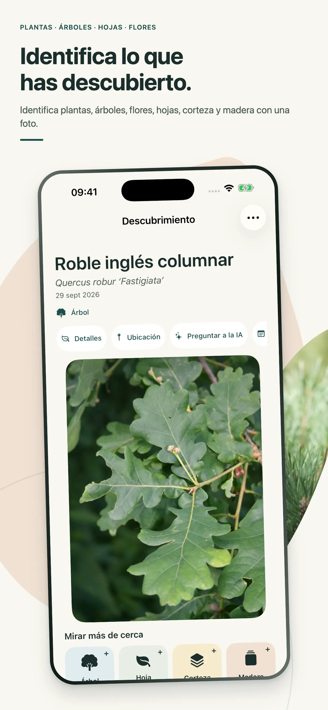
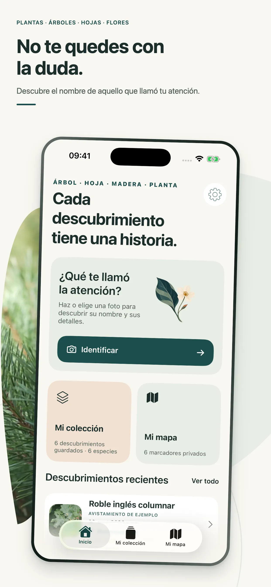
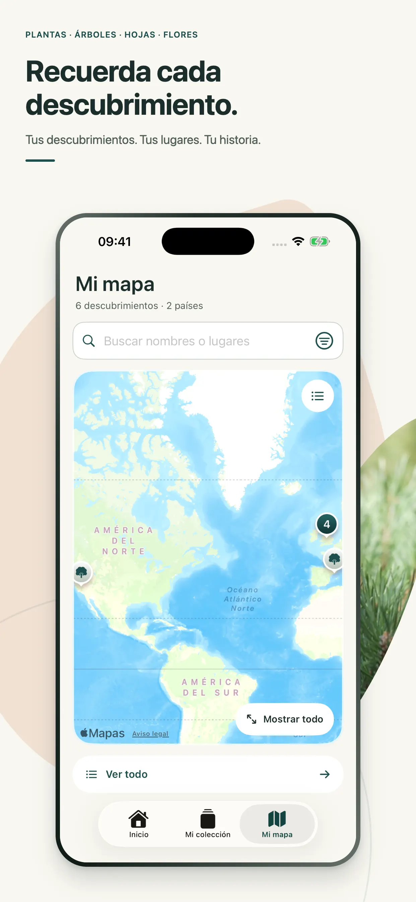

Identificación visual
Reconoce plantas, flores y árboles a partir de una foto.
 Oqvi
OqviNaturaleza y descubrimiento
Haz una foto, descubre qué planta tienes delante y guarda tus hallazgos para recordarlos después.
Descargar en el App StoreDiseñada para iPhone · Por Kestora Labs


Hecha para una función clara
Reconoce plantas, flores y árboles a partir de una foto.
Consulta datos claros sobre cada especie identificada.
Guarda descubrimientos y vuelve a ellos cuando quieras.
En tu día a día
Reconoce plantas, flores y árboles a partir de una foto. Consulta datos claros sobre cada especie identificada.

Las identificaciones pueden contener errores. No uses Oqvi para decidir si una planta es comestible, segura o adecuada para un tratamiento.